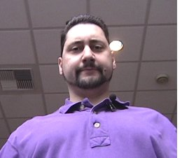
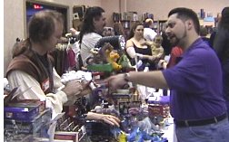
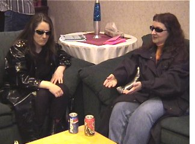
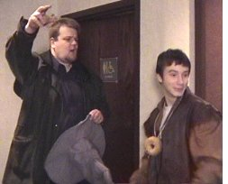
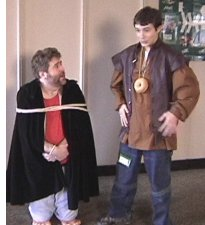

Escape From Seattle | Kill Roy | Doctor Who | Star Trek: The Pepsi Generation
What's Ryan Watching | The Wolfe Project | Mystery Science Theater 3000
Have I Got News For You | The 2001 Movies | Norwescon Movies
Intergalactic
Bad Astra
The Matricks
Run Frodo Run
I was contacted early in 2000 to participate in a filmmaking workshop at Norwescon, Seattle's big regional science fiction convention. The plan was to shoot a movie at the convention and let folks participate in the making. I have to be honest and say I thought it would never work. However, for three years consistently, we have shot a movie in two hours (sometimes cheating a bit over) with virtually no editing and they have turned out so well, I eagerly show them to people.

The theme of Norwescon in 2000 was "Ad Astra," latin for "to the stars." Everyone agreed we should do some play on this for the title of our movie which naturally enough, concerns itself with a science fiction convention. Yes, it's the old "fish out of water" gimmick as an alien ("transmogrified" from a pet rat that someone had brought along to the con) attends the convention, not realizing the mixture of fantasy and reality is interfering with his attempt at human reconnaissance. Fortunately for the human race, the invasion is called off due to the erroneous perception that humans have incredible powers and weapons that the rat race would be unable to overcome.
Credits:Intergalactic Bad Astra
5 minutes. Mini-DV videotape. Filmed in two hours on April 22,
2000.
Cast ... (if you are in this movie (since we never do any
credits), please write me and tell me who you played!)
Written, Produced, and Directed by Edward Martin III and Leopoldo
Marino. Photographed by Ryan K. Johnson.

Edward wasn't able to make it to the convention due to illness and Leopoldo had no interest in participating a second time, so it was left to me and Adam Buckner to pull off the filmmaking workshop this year. We were all set to go with another idea (which I've since forgotten) when someone suggested doing a parody of The Matrix. I couldn't resist. Edward's wife Katrina agreed to play "Zero" (our version of Keanu Reeves' Neo), and Janet Borkowski would be "Morpheus" because she looks nothing like Laurence Fishburn. Rounding out the cast was my roommate at the time, Erik Prill, as Agent Jones.Friday night at the convention, I sat in our hotel room and rewatched The Matrix on the in-house video to come up with material to use. Ten minutes before we were to begin shooting on Saturday morning, I had my wife Kate Waterous take notes as I dictated the entire script. Adam did a great job directing, and we quickly moved from location to location to film the spoof. In our version of The Matricks, Zero drinks from a red Coke can (instead of a blue Pepsi can) and finds out from Morpheus that all of fandom is a construct by evil computers to enslave humanity. There's even a revelation of the truth about chocolate ice cream! Eventually, Zero and Agent Jones fight it out, sadly without the multi-million dollar budget afforded the Wachowski brothers on their epic (the bullets here are on a stick and the actors have to freeze in place as the camera whirls around them).
The Matrix
5 minutes. Mini-DV videotape. Filmed in two hours on April 14,
2001.
Cast...Katrina Martin as Zero, Janet Borkowski as
Morpheus, Erik Prill as Agent Jones.
Produced by Adam Buckner, Ryan K. Johnson, and Brian D.
Oberquell, Directed by Adam Buckner, Written & Photographed
by Ryan K. Johnson. Post-production audio by Erik Prill.

In 2002, both Edward and Leopoldo returned to the workshop and if we were going to do yet another parody, clearly there was one movie in everyone's mind: Lord of The Rings: The Fellowship of the Ring. We decided to combine this with a clever German art-house movie, Run Lola Run (check it out!), and show three possible outcomes of Frodo's attempt to take the One Ring (in our case, a bagel) to Mount Doom and rescue Sam. Everyone really got into the spirit of the movie and we had a huge cast and crew with us as we kept running around the hotel having to do the same scenes in the same places three times in a row (but all shot in sequence with no editing). The movie begins with Frodo, while waiting around a pay phone, receiving a call from Sam telling him to bring the One Ring to Mount Doom. Gandalf emerges from the nearby women's restroom and thus advises him: "Run Frodo, Run!" Frodo's adventures take him past a white rabbit, a large scary fan, a Balrog, Darth Vader, and screaming fans, until the final confrontation (after dying twice, just like Kenny) at Mount Doom (or something fairly similar).
Credits:Run Frodo Run
6 minutes. Mini-DV videotape. Filmed in two hours on March 30,
2002.
Cast... Theo Lentz as Frodo, Brian D. Oberquell as Sam,
Brian Hunt as Sauron, Mark Dranek, Kate Waterous, Rachel as Orcs.
Produced by Edward Martin III, Leopoldo Marino, Ryan K. Johnson
and Brian D. Oberquell, Directed by Edward Martin III, Written by
Edward Martin III and Leopoldo Marino. Photographed and
post-production audio by Ryan K. Johnson.
We made this!
 Back to Ryan's
Homepage
Back to Ryan's
Homepage
Escape From Seattle | Kill Roy | Doctor
Who | Star Trek: The Pepsi
Generation
What's Ryan Watching | The Wolfe Project | Mystery Science Theater 3000
Have I Got News For You | The 2001 Movies | Norwescon Movies